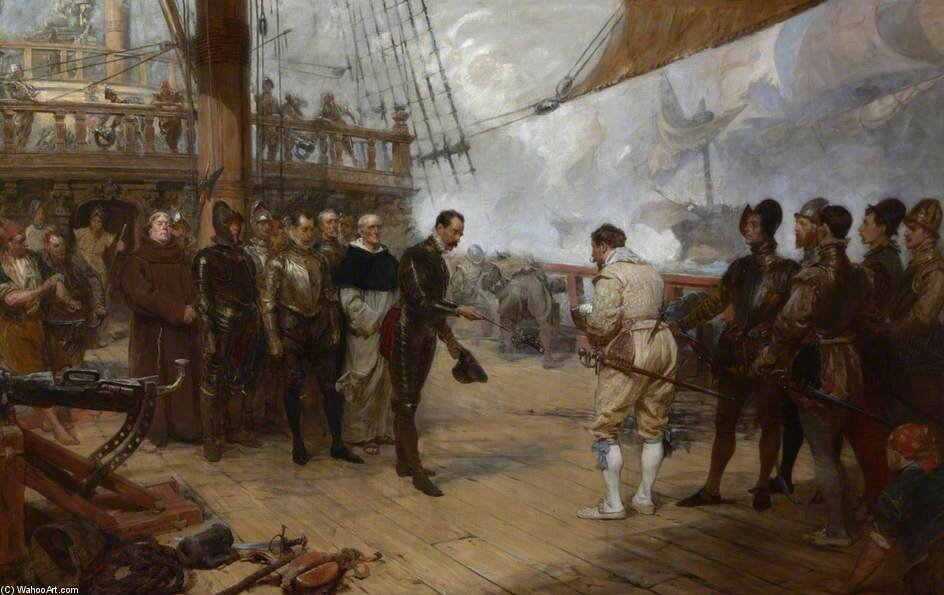
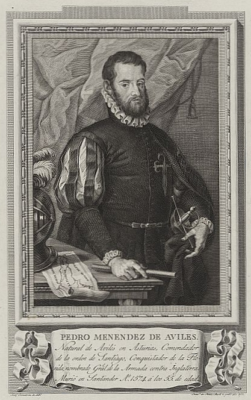

Судьба - невидимый, бесчувственный тиран!
Жуковский


Когда мы закончили [артиллерийскую дуэль с английской эскадрой], я послал пинас к кораблю Хуана Мартинеса де Рекальде, чтобы узнать, имеет ли он повреждения. Выяснилось, что он имеет тяжелые повреждения и его фок-мачта разрушена большим ядром. Поблагодарив меня за желание помочь, он сообщил, что без помощи не сможет участвовать в новом бою, если он произойдет в этот день. При выдвижении с целью оказать ему помощь, в соответствии с его просьбой, случилось так, что другой корабль из его бискайской эскадры пересек мой курс, так что я не мог ни пройти мимо, ни уступить ему путь, в результате он врезался в нос моего корабля, повредив блинд и сломав блинда-рей. При попытке отойти с места инцидента, но не имея возможности управлять поврежденным судном до устранения поломки, другой корабль врезался в мое судно точно таким же образом, сломав мне бушприт, порвав фалы и фок. Оказавшись в таком плачевном состоянии, я направил герцогу сообщение и попросил его подождать, пока я поставлю новый фок из имеющегося запаса и приведу корабль в порядок.
Всеми силами я, как мог, старался держаться за флотом: находясь под ветром у него, удалил поврежденную рею на фок-мачте и паруса для быстрейшего их ремонта. Я надеялся, что герцог откликнется на мою просьбу. В это время началось сильное волнение моря, и мой корабль, имеющий повреждения парусов и неисправные фалы на фок-мачте, к тому же будучи плохо построен, повел себя в высшей степени неудовлетворительно, так что еще до того, как удалось устранить повреждения, его фок-мачта сломалась на уровне палубы и рухнула на грот-мачту, таким образом лишив нас возможности провести ремонт в короткие сроки. Я вновь послал сообщение герцогу и произвел три или четыре выстрела из тяжелых орудий, чтобы оповестить весь флот о бедственном положении в котором я оказался. Я умолял герцога либо направить для буксировки моего судна какой-нибудь корабль или галеас, либо дать указания о моих дальнейших действиях. Тем не менее, хотя герцог был недалеко от меня, видел, в каком положении оказался мой корабль и мог прийти на помощь, он не сделал этого. И, словно мы не были подданными Вашего величества и не находились на Вашей службе, герцог произвел выстрел из пушки, призывая весь флот следовать за ним, и на виду у всего флота оставил нас в печальном положении, когда противник находился на дистанции всего в четверть лиги. К исходу дня некоторые его корабли пытались напасть на меня, я оказал им сопротивление, и оборонялся всю ночь, до следующего дня, не теряя надежды, что герцог пришлет помощь, а не проявит по отношению ко мне такую неслыханную бесчеловечность и неблагодарность.
На следующий день, оказавшись в таком бедственном положении, лишившись надежды на помощь, потеряв из виду свой флот, окруженные врагами, мы увидели, что к нам подошел адмирал вражеского флота Френсис Дрейк на своем корабле. Дрейк передал на наш корабль послание с предложением сдаться на условии хорошего обхождения с нами. Я переправился на борт его корабля для обсуждения условий сдачи, основным из которых было сохранение жизни нашим людям и учтивое обхождение с ними. Адмирал дал слово джентльмена и заверил, что королева также придерживается этого же мнения. Я посчитал за лучшее принять его предложение.
(Письмо полностью опубликовано в The Naval Record Society, 1894, Vol. II, pp. 133-136)